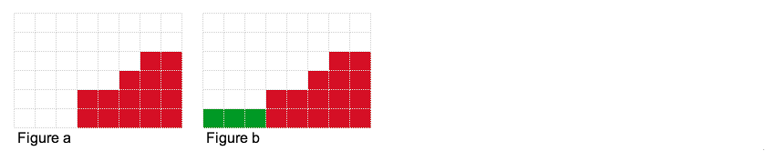
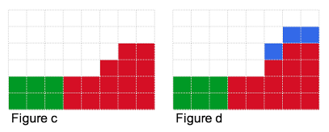
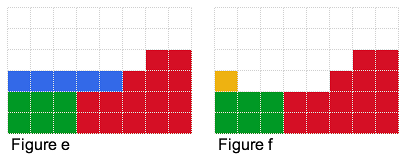
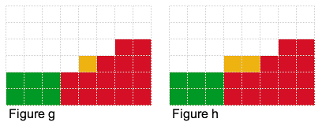
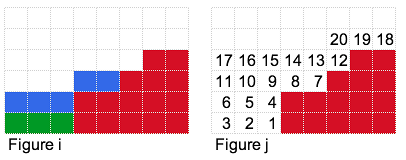
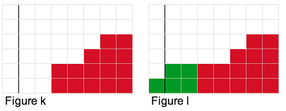
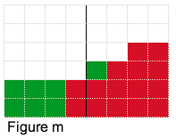

This problem challenges us with an 'intelligent' roulette game where the ball always lands on one of the numbers that has the least total money bet on it. Armed with this knowledge, we go to calculate the maximum expected profit. We know the current bets (need to be integers) and our budget. We now place bets (also integers) to maximize our expected profit.
Before we delve into the solution, let's go through a few examples to get an intuition for the solution strategy. First off, we describe the convention used in the figures.
Let's start out with a toy example (see figure a). Here, we have piles of heights 0, 0, 0, 2, 2, 3, 4, 4. Let's say we have 3 units to bet: which piles should we bet on and how much should we bet per pile? In this case, we can bet on the three piles with height 0 (see figure b) which gives us an expected profit of 33.
Observation #1: As only the piles with minimum-height have a chance to win, we want to try and place our bets on piles resulting in a minimum-height.
What if we had 6 units to bet? We can again place bets on piles with height 0 (see figure c). The result is 5 piles with height 2 (3 green piles and 2 red piles). Our expected profit is 37.2. By the way, if the red piles of height 2 were instead of height 3, our expected profit would have been 66!
What if we had 7 units to bet? We can place 6 units as described above. But where should we place the 7th one? We could try placing it in the blue locations in figure d, but that does not help at all. Or we could try placing it in any of the blue locations in figure e, which will change our expected profit as it will decrease the total number of piles with minimum-height 2. If we placed the 7th unit in the yellow position as in figure f, we will reduce our expected profit! But if we placed it as in figure g, our expected profit will increase to 47! It increases as we have decreased the number of piles with minimum-height that weren't contributing to our expected profit.
 Observation #2: We can possibly increase the expected profit by decreasing the number of piles with minimum-height.
What if we had 8 units to bet? You guessed it. We can place it as in figure h and get an expected profit of 64. In general, our optimal set of bets will have a step like figure of minimum-height h, and height h+1 or higher (as shown by the blue squares in figure i).
Our simple strategy (for the small input) is to lay the bets one by one as shown in figure j. Each time we put a bet (e.g. in 1), we calculate the expected profit then place the next bet (i.e. 1 and 2) then calculate the expected profit, then repeat for the next one (1, 2 and 3). We retain the maximum expected profit.
This strategy works fine when the bet we have to place is small, but amount of money we can bet can get as large as 1012! Therefore we need to use a strategy that will run faster.
Observation #3: For the optimal solution, the step from minimum-height h to h+1 (or higher) will occur at some vertical location (see figure k). At that vertical location, we want the highest minimum-height h possible with the amount of money we have.
Armed with this observation, we will essentially fix a vertical location and try to build as tall a step as possible. For example if we had 7 units of money and we fixed the vertical step location after the first column as shown in figure k, then the highest step we could build is shown in figure l, which uses 5 units of money (2 units remain unused). For the vertical step location after the fourth block as shown in figure m, we use all 7 units of money.
 Therefore the strategy is to try all possible vertical locations, calculate the highest 'step' we can generate for each vertical location and calculate the expected profit. As usual, we retain the maximum one.
So how do we calculate the highest possible step given a vertical location? Doing it by adding squares one-by-one is going to be too slow, therefore we turn to our trusty friend binary search. We want to determine the highest minimum-height step for that vertical location. Notice that since the amount of money (squares) required to build each 'step' is monotonically increasing, we can perform binary search.